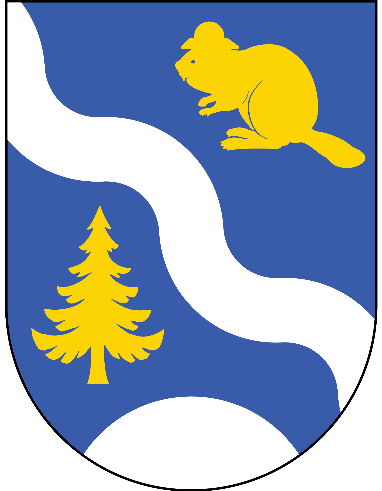

Kommunen informerar
Officiell information från Hôla kommun
Välkommen till Hôla kommuns informationssida! Här hittar du aktuella projekt, pågående initiativ och samhällsmeddelanden. Som alltid leds samtliga utvecklingsinsatser av projektledare Orkel Svullén, tillhörande den nybildade projektförvaltningen, som med sin unika vision puttar kommunen in i framtiden.
Aktuella projekt & initiativ
- Webbkamera mot ingenting: Kommunen satsar på slow-tv. Efter att ha utsetts till frivillig, har Ruban nu placerat en webkamera riktad mot en stubbe i Hôlskogen. I dagsläget trogna tittare.
Kommande medborgardialog
Den 3:e bjuder kommunen in till ett öppet samtal med Orkel Svullén om framtida satsningar.
Sidan uppdateras löpande av projektförvaltningen, Hôla kommun.